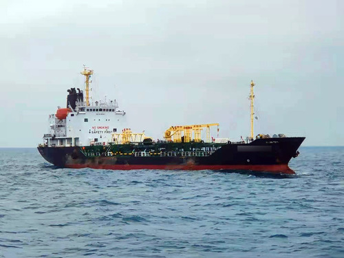
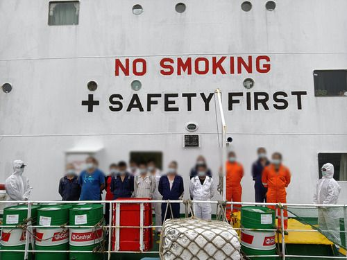

被海警执法员发现的走私集团的供油母船
广东海警局近日联合多地海关缉私部门成功打掉5个长期活跃在广东海域的走私成品油团伙。初步查证涉案柴油约16万吨，案值约8亿元，涉嫌偷逃税款约4亿元。
不久前，广东海警局根据线索指引，在辖区海域内发现走私集团的2艘大中型供油母船。该局立即指令海警执法员依法对其进行登临控制。随后，海警执法艇在江门至茂名海域开展进一步搜索，先后查获2艘接驳油船。次日，该局会同汕头、南宁、江门、广州等海关缉私部门同步开展陆地收网行动。
此案系中国海警与海关联合经营、海陆查缉的又一重大战果，实现了对“海上成品油母船、接驳船舶、销售下家”的全链条打击。这次收网行动共抓获涉案人员92名，团伙主要成员悉数到案。目前，该案正在进一步侦办中。
下一步，中国海警将继续强化与相关职能部门沟通协作，进一步推动完善反走私综合治理机制，加大巡逻管控力度，坚决打击海上各类违法犯罪活动。

海警执法员在供油母船上抓获的嫌疑人